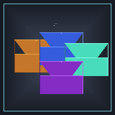

Alloys
Minecraft 26.2 datapack — public docs and ad-hoc QA tools. Install the QA checklist as a progressive web app from your browser menu.
Source code is private; this site is the public companion for Underwood-Inc/s-alloys on GitHub Pages.